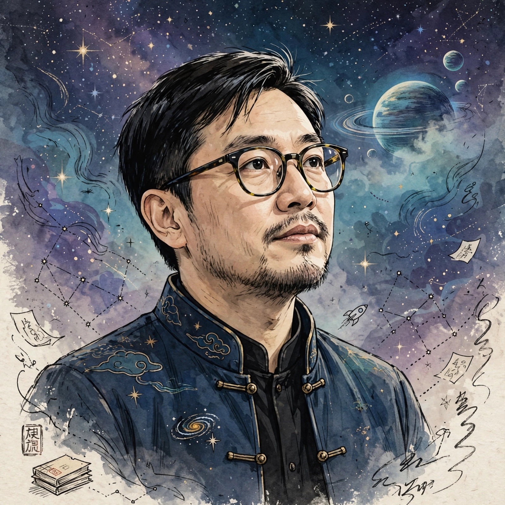

| Liu Cixin | |
|---|---|
| Born | June 23, 1963, Beijing, China |
| Occupation | Novelist, short-story writer, computer engineer |
| Language | Chinese |
| Genre | Science fiction |
| Notable works | The Three-Body Problem, The Dark Forest, Death's End, The Wandering Earth |
| Notable awards | Hugo Award for Best Novel (2015); Galaxy Award (multiple) |

Liu Cixin (born June 23, 1963) is a Chinese computer engineer and science fiction writer. He is a nine-time winner of China's Galaxy Award and has won the Hugo Award and the Locus Award for his novel The Three-Body Problem. He is considered the leading voice of Chinese science fiction, and his work has been translated into many languages.
Liu was born in Beijing and raised in Yangquan, Shanxi province, where his parents worked in a coal mine. He studied hydraulic engineering at the North China University of Water Resources and Electric Power, graduating in 1988, and worked as a computer engineer at a power plant in Yangquan while writing fiction.
Liu's best-known work is the trilogy Remembrance of Earth's Past, comprising The Three-Body Problem (serialised 2006; book edition 2008), The Dark Forest (2008) and Death's End (2010). The trilogy depicts humanity's first contact with the Trisolaran civilisation and the centuries-long struggle that follows, and introduced concepts such as the "dark forest" hypothesis of cosmic sociology. Ken Liu's English translation of The Three-Body Problem (2014) won the 2015 Hugo Award for Best Novel, making Liu Cixin the first Asian author to win the prize. The trilogy was adapted as the Chinese television series Three-Body (2023) and the Netflix series 3 Body Problem (2024).
His novella The Wandering Earth was adapted into one of China's highest-grossing films (2019), with a sequel in 2023. Other works include Ball Lightning, Supernova Era, and the short-story collections The Wandering Earth and To Hold Up the Sky.